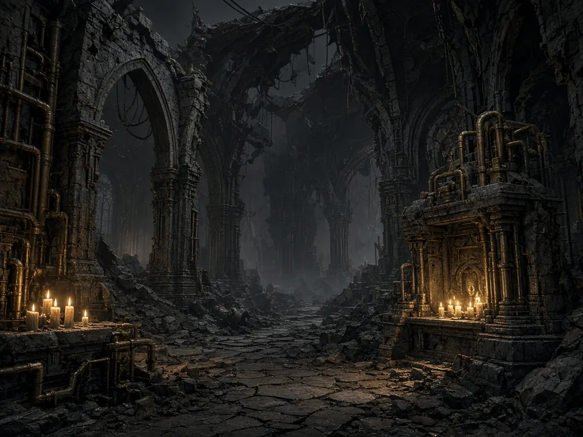

Centerpieces
Void wreck · ruined cathedral · scrap fortress · manufactorum stack. Pick one for the first drop.
Battlefield STLs
Centerpiece environments people actually put down — crashed hulls, ruined naves, scrap keeps. Gothic sci-fi inspired. No official IP on the storefront titles.

Original terrain artPreview poll on this browser until Discord is live. Winner becomes the first Meshy → print-test → personal-use STL drop. Recommended first: ruined cathedral.
Full checklist lives in the Forge docs. Pipeline: vote → generate → cleanup → test print → photos → zip + license.
Void wreck · ruined cathedral · scrap fortress · manufactorum stack. Pick one for the first drop.
Modular ruin walls, rubble scatter, walkways, craters, fuel silos — pair with a centerpiece.
Objective markers, dice trays, token holders, army placards. Paradice = dice.